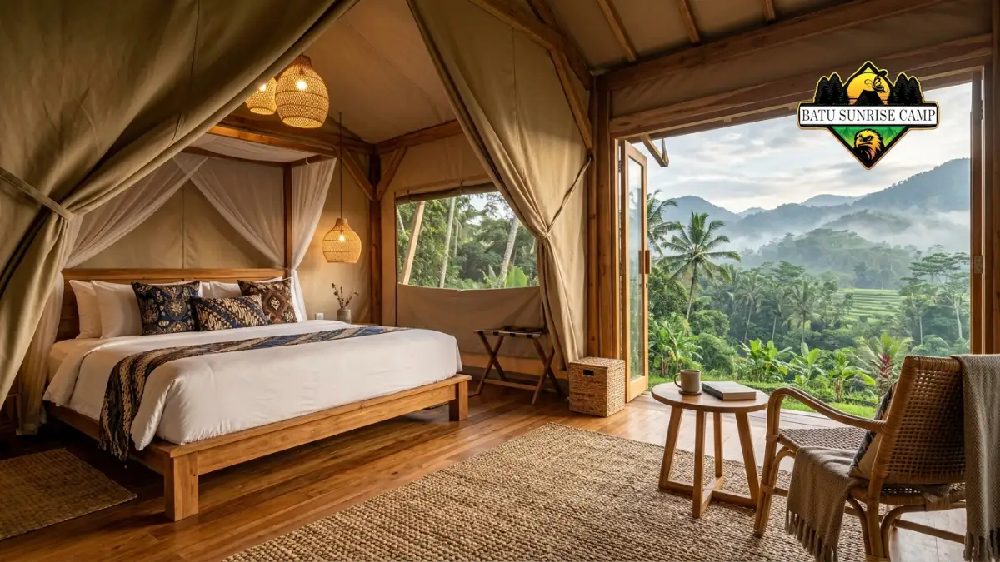

Tenda camping mewah adalah tenda berkapasitas besar dengan material premium, desain interior nyaman, dan fasilitas tambahan setara penginapan, cocok untuk pengalaman glamping tanpa mengorbankan kenyamanan.
Apa Itu Tenda Camping Mewah?
Tenda camping mewah adalah jenis tenda yang dirancang dengan standar kenyamanan lebih tinggi dibanding tenda camping konvensional, biasanya digunakan untuk kegiatan glamping atau berkemah jangka panjang.
Tenda ini umumnya memiliki ruang gerak lebih luas, atap lebih tinggi, dan material yang lebih tahan lama.
Konsep tenda mewah berkembang dari kebutuhan wisatawan yang ingin merasakan suasana alam terbuka tanpa harus mengorbankan kenyamanan dasar seperti tempat tidur layak, penerangan, dan sirkulasi udara yang baik.
Tenda jenis ini sering dijumpai pada area glamping komersial, resor outdoor, maupun digunakan pribadi oleh keluarga yang sering berkemah.
Secara umum, tenda camping mewah dibedakan dari tenda biasa melalui tiga aspek utama: material yang lebih kokoh, ruang interior yang lebih lega, dan fasilitas pendukung yang lebih lengkap seperti partisi ruangan, jendela kasa, dan sistem ventilasi ganda.
Untuk Siapa Tenda Camping Mewah Cocok Digunakan?
Tenda camping mewah paling cocok untuk keluarga, kelompok wisata, dan pelaku usaha glamping yang membutuhkan kenyamanan lebih saat berkemah dalam waktu lama.
Kelompok pengguna yang umum memanfaatkan tenda jenis ini antara lain:
- Keluarga yang berkemah bersama anak-anak dan membutuhkan ruang tidur terpisah.
- Pelaku bisnis wisata alam atau operator glamping yang menyewakan tenda kepada tamu.
- Komunitas outdoor yang sering mengadakan acara berkemah dalam durasi lebih dari satu hari.
- Individu yang menginginkan pengalaman menginap di alam terbuka dengan standar kenyamanan setara kamar hotel sederhana.
Bagi pengguna yang hanya berkemah singkat dan mengutamakan mobilitas tinggi, tenda camping ringan atau backpacking tetap menjadi pilihan yang lebih praktis dibanding tenda mewah.
Kapan Waktu yang Tepat Menggunakan Tenda Camping Mewah?
Tenda camping mewah paling ideal digunakan saat berkemah dalam durasi panjang, acara keluarga, atau kegiatan wisata yang mengutamakan kenyamanan menginap.
Beberapa situasi yang cocok menggunakan tenda ini meliputi:
- Liburan keluarga di area perkemahan dengan akses kendaraan, karena ukuran dan bobotnya membuatnya kurang praktis dibawa mendaki.
- Acara khusus seperti gathering komunitas atau retret di alam terbuka.
- Musim dengan cuaca relatif stabil, karena sebagian tenda mewah menggunakan material yang membutuhkan perawatan tambahan saat hujan deras dalam waktu lama.
- Lokasi camping yang menyediakan area datar dan cukup luas, mengingat ukuran tenda mewah umumnya lebih besar dari tenda standar.
Mengapa Tenda Camping Mewah Penting bagi Pengalaman Berkemah?
Tenda camping mewah penting karena mampu meningkatkan kualitas istirahat dan kenyamanan selama berkemah, terutama untuk kelompok yang mengutamakan pengalaman menginap yang menyerupai rumah.
Kenyamanan ini berpengaruh langsung pada kualitas tidur, keamanan barang bawaan, dan pengalaman berkemah secara keseluruhan.
Ruang yang lebih luas juga memungkinkan pengguna membawa perlengkapan tambahan seperti kasur portabel, meja kecil, atau kursi lipat tanpa membuat tenda terasa sempit.
Selain itu, tenda camping mewah sering menjadi daya tarik tersendiri bagi bisnis glamping karena menawarkan nilai tambah dibanding penginapan konvensional, yaitu kombinasi antara suasana alam dan fasilitas yang layak.
Apa Saja Manfaat Menggunakan Tenda Camping Mewah?
Manfaat utama tenda camping mewah adalah kenyamanan lebih tinggi, daya tahan material yang lebih baik, dan fleksibilitas ruang untuk berbagai kebutuhan berkemah.
Beberapa manfaat yang umum dirasakan pengguna:
- Ruang gerak lebih luas sehingga tidak terasa sesak meski digunakan bersama keluarga.
- Material yang umumnya lebih tebal dan tahan lama dibanding tenda standar sehingga dapat digunakan berulang kali.
- Ventilasi yang lebih baik karena sebagian besar tenda mewah dilengkapi jendela dan bukaan udara tambahan.
- Estetika desain yang mendukung dokumentasi dan pengalaman visual saat berkemah.
- Potensi nilai komersial bagi pelaku usaha glamping karena daya tarik visual dan kenyamanannya.

Interior tenda camping mewah yang nyaman dengan ruang gerak luas dan ventilasi baik.
Bagaimana Cara Kerja Sistem Ventilasi dan Struktur Tenda Camping Mewah?
Sistem ventilasi tenda camping mewah umumnya bekerja melalui kombinasi jendela kasa, bukaan atap, dan celah udara pada bagian bawah tenda untuk menjaga sirkulasi tetap lancar.
Struktur tenda mewah biasanya menggunakan rangka logam atau kayu yang lebih kokoh dibanding tenda tiang lipat biasa, sehingga mampu menopang ukuran tenda yang lebih besar dan tinggi.
Atap sering dirancang dengan kemiringan atau bentuk kerucut agar air hujan dapat mengalir dengan baik dan mengurangi kemungkinan terjadinya genangan di permukaan tenda.
Material dinding biasanya berlapis untuk menahan air sekaligus menjaga suhu di dalam tenda tetap stabil, meskipun tingkat efektivitasnya dapat bervariasi tergantung merek dan kualitas material yang digunakan.
Apa Saja Faktor yang Mempengaruhi Kualitas Tenda Camping Mewah?
Kualitas tenda camping mewah dipengaruhi oleh jenis material, kekuatan rangka, sistem ventilasi, dan lapisan anti air yang digunakan.
Faktor-faktor utama yang perlu diperhatikan:
- Material dinding: kanvas tebal cenderung lebih tahan lama namun lebih berat, sementara poliester lebih ringan namun daya tahannya dapat bervariasi.
- Kekuatan rangka: rangka aluminium umumnya lebih ringan dan tahan karat dibanding rangka baja biasa.
- Lapisan anti air: lapisan tambahan pada bagian atap dan dasar tenda membantu mengurangi risiko rembesan air.
- Ukuran dan tinggi tenda: memengaruhi kenyamanan gerak serta kemudahan pemasangan.
- Aksesori pendukung: seperti alas tambahan, partisi ruangan, dan sistem pengait jendela.
Apa Saja Kesalahan Umum Saat Memilih atau Menggunakan Tenda Camping Mewah?
Kesalahan umum yang sering terjadi adalah memilih ukuran tenda yang tidak sesuai kebutuhan, mengabaikan kualitas material, dan kurang memperhatikan perawatan setelah pemakaian.
Beberapa kesalahan yang perlu dihindari:
- Memilih tenda tanpa mempertimbangkan jumlah pengguna dan kebutuhan ruang tambahan untuk barang bawaan.
- Mengabaikan pentingnya alas tambahan yang dapat melindungi dasar tenda dari kelembapan tanah.
- Tidak mengeringkan tenda sepenuhnya sebelum disimpan, yang dapat menyebabkan material cepat rusak atau berjamur.
- Memasang tenda di area yang tidak rata tanpa mempertimbangkan drainase air saat hujan.
- Kurang memperhatikan kualitas jahitan dan sambungan material, yang berpengaruh pada daya tahan jangka panjang.
Bagaimana Cara Memilih Tenda Camping Mewah yang Tepat?
Cara memilih tenda camping mewah yang tepat adalah dengan menyesuaikan kapasitas, material, dan fitur tambahan dengan kebutuhan serta kondisi lokasi berkemah.
Langkah yang dapat dipertimbangkan:
- Tentukan jumlah pengguna dan kebutuhan ruang tambahan untuk barang bawaan.
- Pilih material sesuai kondisi cuaca dan durasi penggunaan, misalnya kanvas untuk penggunaan jangka panjang atau poliester untuk mobilitas lebih tinggi.
- Periksa kekuatan rangka dan kemudahan proses pemasangan.
- Perhatikan sistem ventilasi, terutama jika akan digunakan di daerah beriklim panas.
- Pastikan tersedia aksesori pendukung seperti alas, jaring nyamuk, dan penutup jendela tambahan.
Berapa Kisaran Harga Tenda Camping Mewah?
Harga tenda camping mewah bervariasi tergantung ukuran, material, dan merek, dengan kisaran yang secara umum lebih tinggi dibanding tenda camping standar karena kualitas material dan fitur tambahannya.
Beberapa faktor yang memengaruhi perbedaan harga meliputi jenis material dinding, ukuran kapasitas, kelengkapan aksesori, serta reputasi merek.
Bagaimana Cara Merawat Tenda Camping Mewah agar Tahan Lama?
Cara merawat tenda camping mewah agar tahan lama adalah dengan membersihkan secara rutin, mengeringkan sepenuhnya sebelum disimpan, dan menghindari lipatan yang terlalu ketat pada material kanvas.
Perawatan dasar yang disarankan meliputi pembersihan debu dan kotoran menggunakan kain lembap, penyimpanan di tempat kering dengan sirkulasi udara baik, serta pemeriksaan berkala pada bagian jahitan dan rangka.
Kesimpulan
Tenda camping mewah menjadi pilihan tepat bagi mereka yang ingin menikmati alam terbuka tanpa mengorbankan kenyamanan.
Pemilihan yang tepat sebaiknya mempertimbangkan kapasitas, material, ventilasi, dan kebutuhan spesifik lokasi berkemah.
Perawatan rutin juga berperan penting agar tenda tetap awet dan nyaman digunakan dalam jangka panjang.